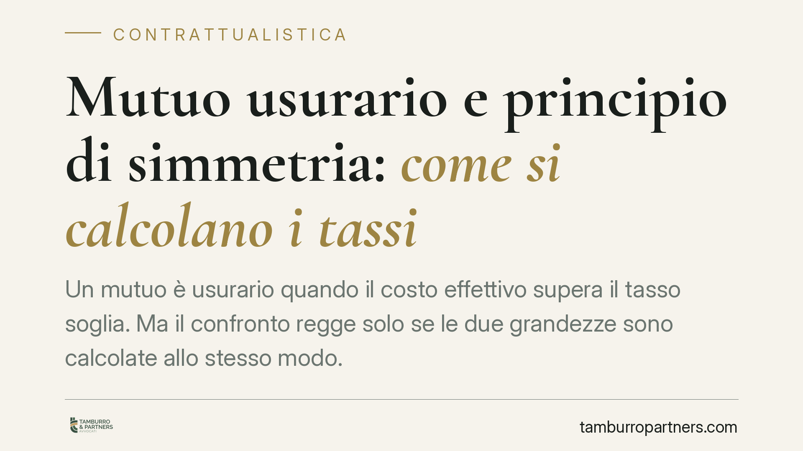

Mutuo usurario e principio di simmetria: come si calcolano i tassi
Un mutuo è usurario quando il costo effettivo supera il tasso soglia. Ma il confronto regge solo se le due grandezze sono calcolate allo stesso modo. È il principio di simmetria ribadito dalle Sezioni Unite: TEG contrattuale e soglia devono seguire identica metodologia. Un tema decisivo per chi contesta l'usura invocando ammortamento alla francese o anatocismo.

Il caso e il principio
Stabilire se un mutuo è usurario sembra un'operazione aritmetica: si confronta il costo del finanziamento con il tasso soglia fissato ogni trimestre. In realtà il confronto ha senso solo se i due valori sono costruiti con la medesima metodologia. È questo il cuore del principio di simmetria affermato dalla Cassazione a Sezioni Unite.
Il TEG (Tasso Effettivo Globale) del contratto e il tasso soglia derivante dal TEGM (Tasso Effettivo Globale Medio) rilevato dalla Banca d'Italia devono essere calcolati con gli stessi criteri. Confrontare grandezze disomogenee — includendo nel TEG voci che il TEGM non considera — vizia il giudizio di usurarietà alla radice.
Inquadramento normativo
La disciplina antiusura ruota attorno alla Legge 7 marzo 1996, n. 108, che ha introdotto la determinazione trimestrale del tasso soglia. Il meccanismo è noto: il MEF, su rilevazione della Banca d'Italia, pubblica i TEGM per categorie omogenee di operazioni; la soglia si ottiene applicando la maggiorazione prevista dalla legge.
Sul versante civilistico opera l'art. 1815, comma 2, c.c.: se sono convenuti interessi usurari, la clausola è nulla e non sono dovuti interessi. La sanzione è drastica — la gratuità del finanziamento — ma presuppone un accertamento tecnico rigoroso. Ed è proprio sulla tecnica del calcolo che si concentra il contenzioso.
La Banca d'Italia definisce, con le proprie Istruzioni, quali oneri concorrono alla formazione del TEGM. Se il giudice, nel calcolare il TEG del singolo contratto, adotta parametri diversi, il raffronto perde coerenza logica prima ancora che giuridica.
Le implicazioni pratiche
Molte contestazioni di usura nascono da due argomenti ricorrenti: l'ammortamento alla francese e il presunto effetto anatocistico.
Nell'ammortamento alla francese la rata è costante e la quota interessi è più alta all'inizio, calando nel tempo. Da qui la tesi — spesso proposta in perizie di parte — che tale struttura produrrebbe interessi occulti da sommare al costo del mutuo, facendo emergere il superamento della soglia. Le Sezioni Unite hanno raffreddato questa impostazione: non si possono aggiungere al TEG contrattuale componenti che il TEGM di riferimento non contempla.
Lo stesso vale per l'anatocismo, cioè la produzione di interessi sugli interessi. Trasformarlo automaticamente in fattore di usura significa mescolare due piani distinti: la legittimità della capitalizzazione e il superamento del tasso soglia sono questioni separate, da valutare con strumenti diversi.
La conseguenza operativa è netta. Le perizie che gonfiano il TEG con voci estranee alla metodologia della Banca d'Italia rischiano di essere disattese in giudizio. Chi intende contestare l'usurarietà deve partire da un calcolo omogeneo, non da una sommatoria di oneri eterogenea.
Questo non significa che l'usura nei mutui non esista o non sia dimostrabile. Significa che va provata con un raffronto tecnicamente corretto, evitando scorciatoie argomentative che i tribunali — sulla scia dell'indirizzo delle Sezioni Unite — tendono a respingere.
Cosa fare in concreto
- Recuperate la documentazione completa: contratto di mutuo, piano di ammortamento, condizioni economiche e ogni comunicazione sugli oneri applicati.
- Individuate il TEGM di riferimento per categoria e trimestre di stipula, verificando le Istruzioni della Banca d'Italia vigenti a quella data.
- Affidate il calcolo a un consulente tecnico che rispetti il principio di simmetria, includendo nel TEG solo le voci che concorrono al TEGM.
- Diffidate delle perizie che sommano anatocismo e ammortamento alla francese come componenti automatiche di usura: rischiano di indebolire la posizione.
- Valutate preventivamente la sostenibilità dell'azione confrontando il risultato del calcolo omogeneo con la soglia, prima di avviare un contenzioso.
Un'analisi tecnica accurata a monte evita contestazioni destinate a essere rigettate e consente di concentrare le risorse sui profili realmente fondati.
Disclaimer
Contributo informativo a cura di Tamburro & Partners - Avv. Giuseppe Tamburro. Non costituisce parere legale.
Ogni contratto ha il suo equilibrio.
Se vuoi una revisione delle clausole o una redazione su misura, scrivi allo studio. Ti rispondiamo entro un giorno lavorativo.